En Haïti, le football est le sport le plus populaire, pratiqué partout, des rues aux stades. Le basketball gagne en popularité chez les jeunes, tandis que le volleyball, le karaté, l'athlétisme, le cyclisme et le tennis de table sont également pratiqués. Les jeux de société (dominos, cartes) sont très répandus. La sélection Haïtienne a été constituée en 1925 et elle est surnommée les Grenadiers.
En 1974, la sélection Haïtienne a participé à la Coupe du Monde pour la première fois de son histoire. L'équipe nationale d'Haïti a marqué les esprits lors de cette Coupe du Monde en Allemagne en atteignant la phase finale. La grande figure fut l'attaquant Emmanuel Sanon, devenu une légende en marquant contre l'Italie (brisant la célèbre invincibilité du gardien Dino Zoff) et l'Argentine.
Points clés de la participation d'Haïti en 1974 :
- Emmanuel Sanon : A marqué deux buts mémorables dans la compétition, dont un contre l'Italie (15 juin 1974) mettant fin à 1 143 minutes d'invincibilité du gardien italien.
- Performance mémorable : Malgré des défaites, l'équipe a marqué l'imaginaire, notamment par son match contre l'Argentine (défaite 4-1) où Sanon a encore marqué.
- Héros nationaux : Au retour, l'équipe a été accueillie en héros par tout le pays.
- Équipe type : L'effectif comprenait des joueurs clés comme le gardien Henri Françillon, Arsène Auguste, Pierre Bayonne, et le capitaine Wilner Nazaire. Bien qu'éliminée au premier tour, cette génération de 1974 reste une référence légendaire du football haïtien.
Les principaux sports pratiqués au quotidien :
- Football : Le sport national, avec le Championnat National (Première Division) et de nombreux matchs de rue.
- Basketball : Très populaire auprès de la jeunesse et dans les écoles.
- Volleyball : Pratiqué au niveau national et dans le cadre scolaire.
- Arts Martiaux : Le karaté et le judo possèdent des équipes nationales dédiées.
- Athlétisme : Disciplines pratiquées historiquement, notamment le saut en longueur.
- Autres sports : Cyclisme, tennis, golf (pour l'élite) et sports nautiques (plongée, voile).
- Jeux et loisirs régionaux : Les combats de coqs, les dominos, les dames, la marelle et les osselets sont fréquents.
Le stade Sylvio Cator à Port-au-Prince demeure le centre principal du football national.
Pour faciliter plus de lecture, je vous encourage à cliquer ICI.
Kal's Bakery and Restaurant, 3401 Church Ave Brooklyn. Phone: 1(718)426-8687. Open: Sunday to Saturday from 11:00 AM to 9:00 PM.
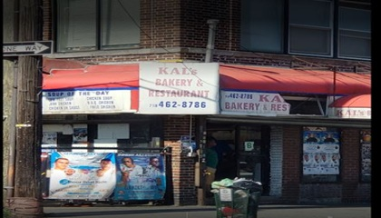
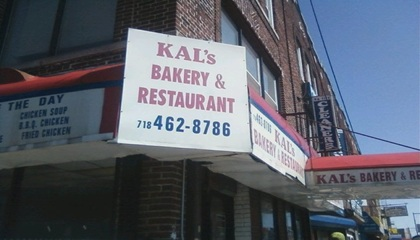
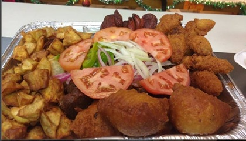
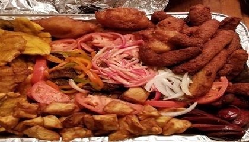

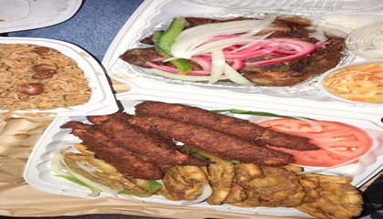
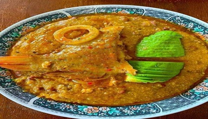


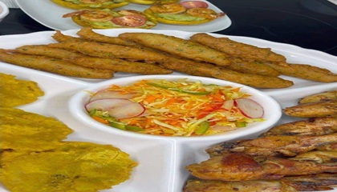
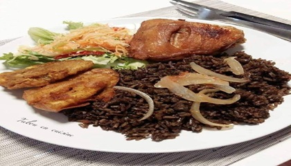
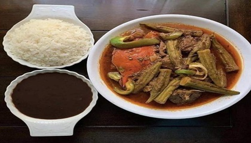

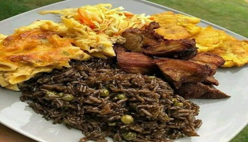


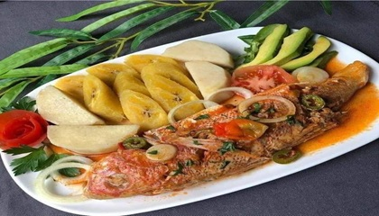
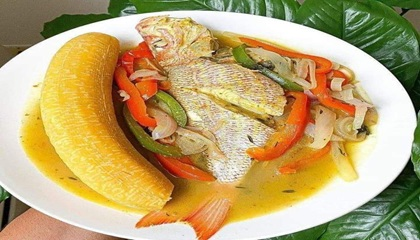
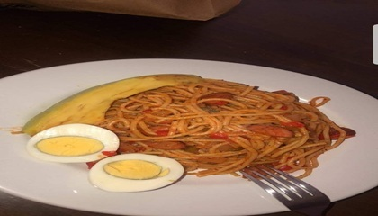
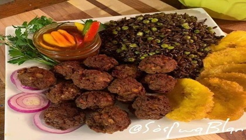
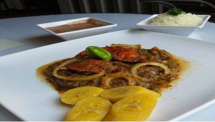
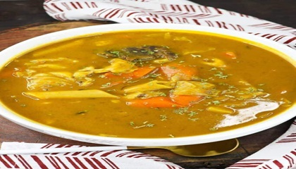